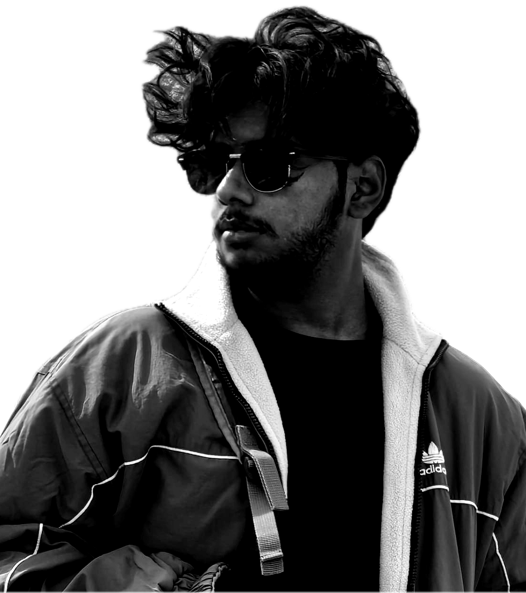

Independent creative studio out of Hyderabad — direction, edit, and image.
Beyond the Noise An independent creative studio out of Hyderabad. I direct, shoot and cut work that hits hard — and doesn't look like everyone else's.

The cut is where the film gets made. Rhythm, hold, impact: every frame earns its place or it goes.
For commissions, collabs, or just to talk shop: